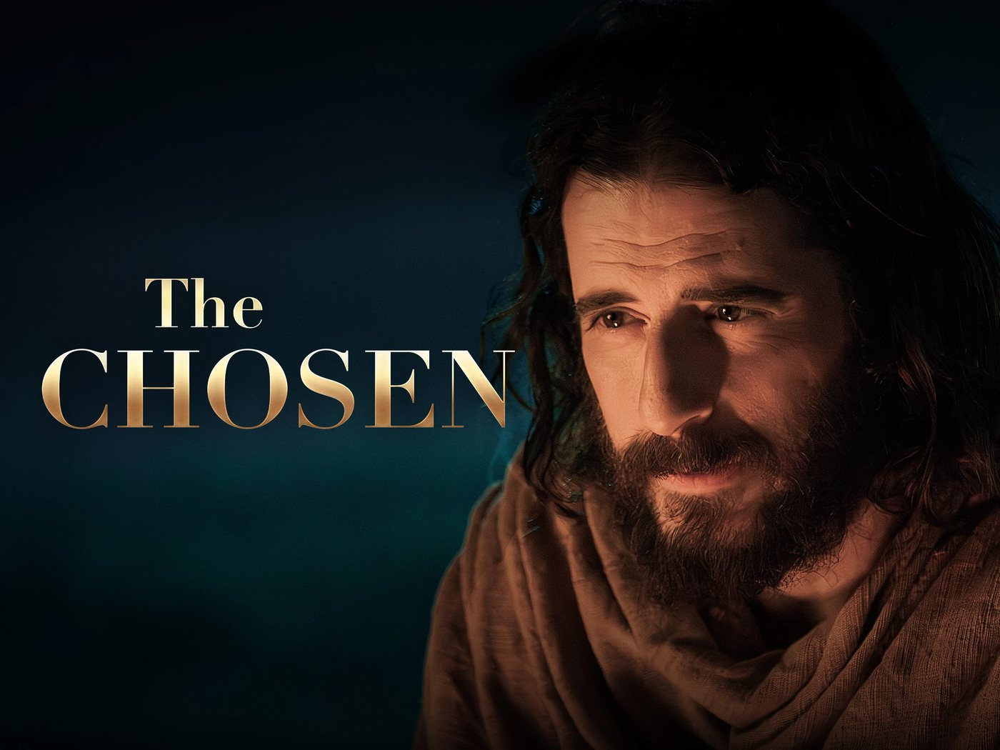
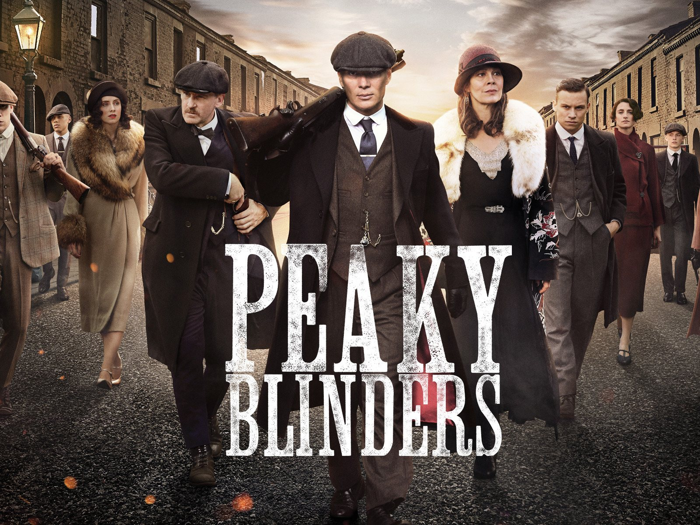
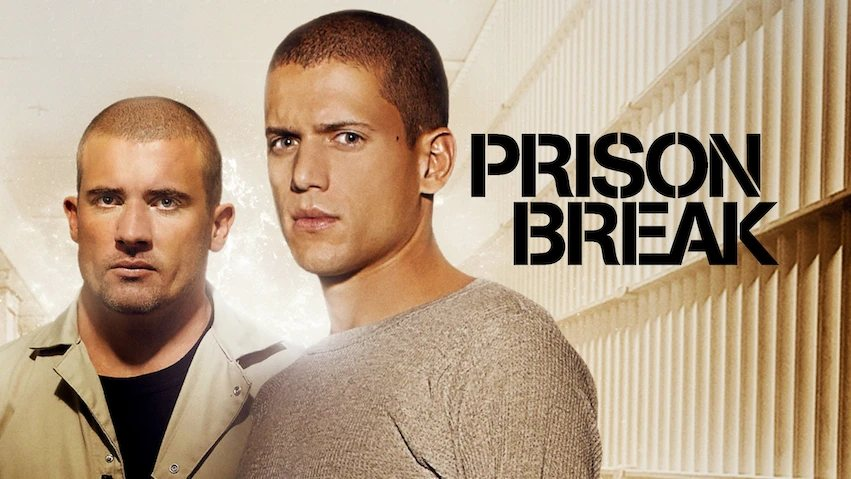
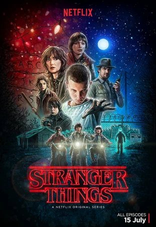
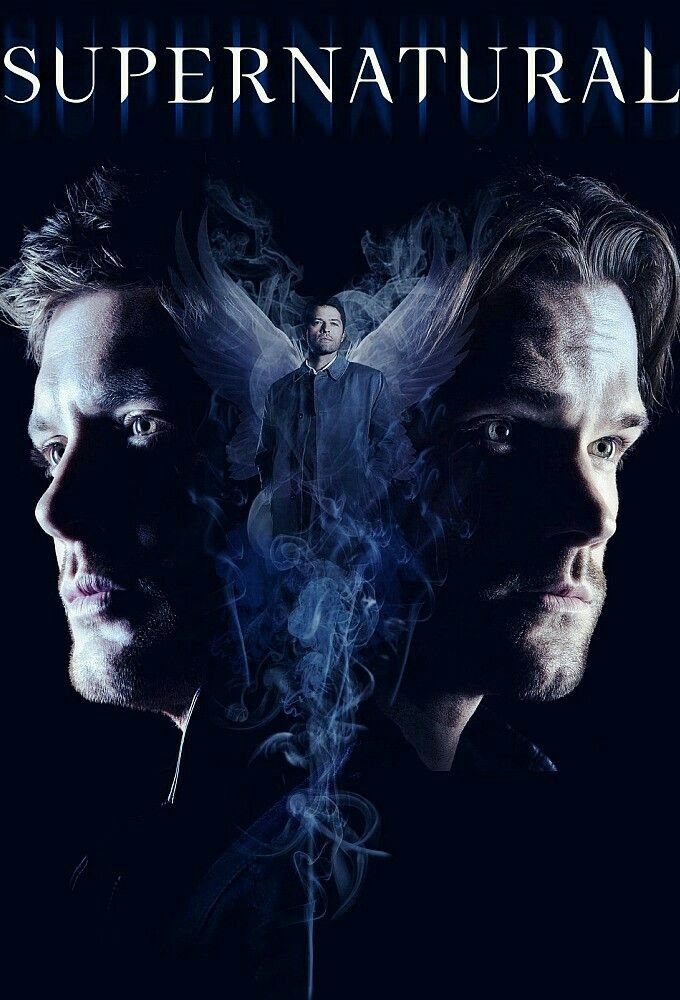

1The Chosen
A vida de Jesus Cristo pela perspectiva das pessoas que o conheceram. Uma produção emocionante e inspiradora.
▶ Assistir Trailer
Birmingham, 1919. Tommy Shelby e sua gangue sobem ao poder no submundo britânico do pós-guerra. Estilo, estratégia e personagens inesquecíveis.

1A vida de Jesus Cristo pela perspectiva das pessoas que o conheceram. Uma produção emocionante e inspiradora.
▶ Assistir TrailerA gangue liderada por Tommy Shelby ascende no submundo britânico pós-Primeira Guerra. Ação, drama e estilo.
▶ Assistir Trailer
3Um engenheiro elabora um plano genial para tirar o irmão, condenado injustamente, da prisão. Suspense a cada episódio!
▶ Assistir Trailer Bridgerton
4
Bridgerton
4
A alta sociedade londrina do século XIX e a família Bridgerton em busca de amor, escândalos e casamentos.
▶ Assistir Trailer
5Crianças enfrentam forças sobrenaturais e segredos do governo após o sumiço de um amigo. Nostalgia dos anos 80!
▶ Assistir TrailerNenhuma série nesse gênero... ainda! 🍿

Quer fugir das séries do momento e maratonar algo com muitas temporadas?
Os irmãos Sam e Dean Winchester cruzam os Estados Unidos caçando criaturas sobrenaturais e lutando contra o mal. Uma série sobre família, destino, livre-arbítrio e a eterna luta entre o bem e o mal.
Os dois sites usam HTML. A diferença está no CSS: cores, fontes, espaçamento, layout e animações. Compare!
Clique nos botões e assista aos trailers no YouTube. Sua próxima maratona começa hoje!